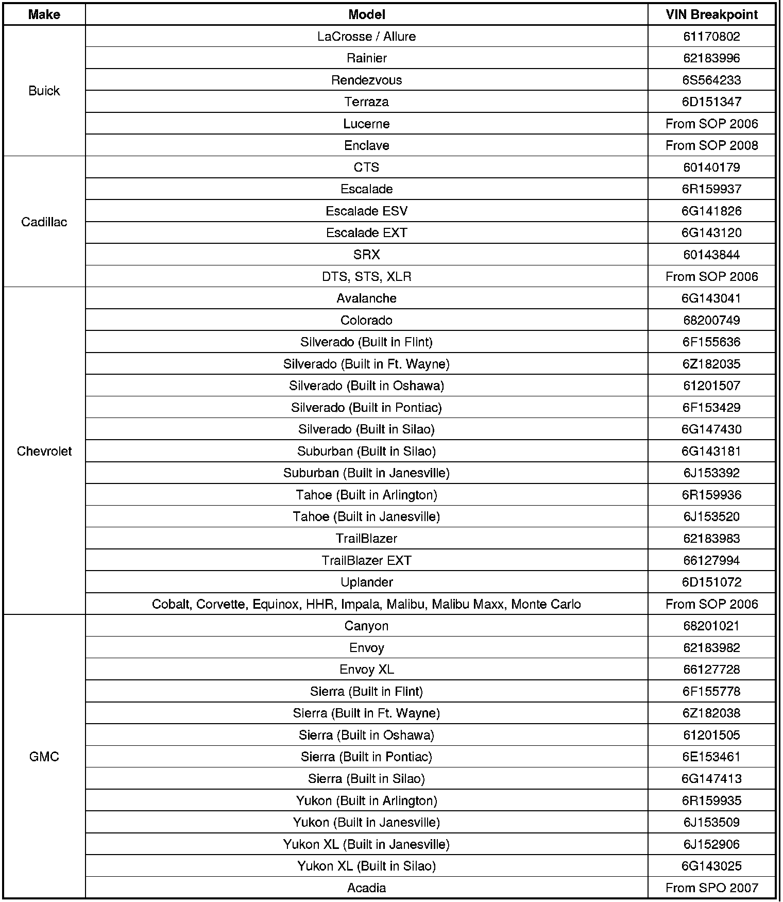
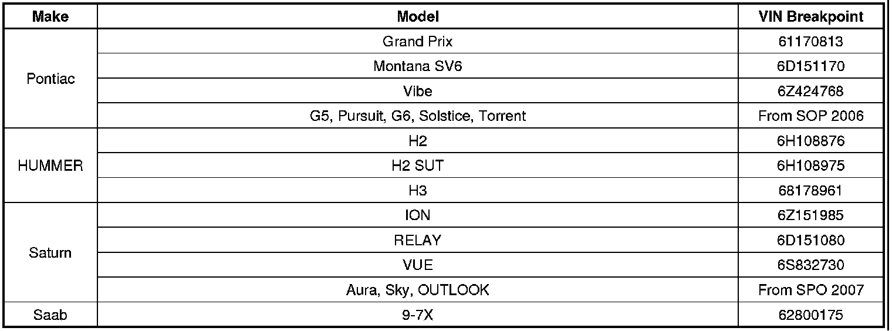
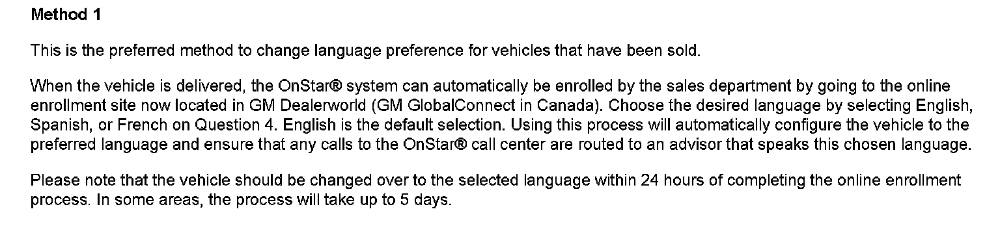
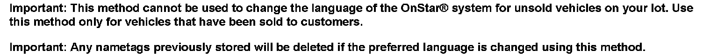
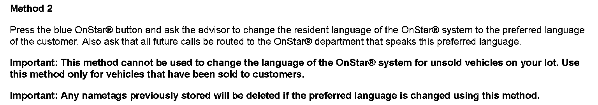
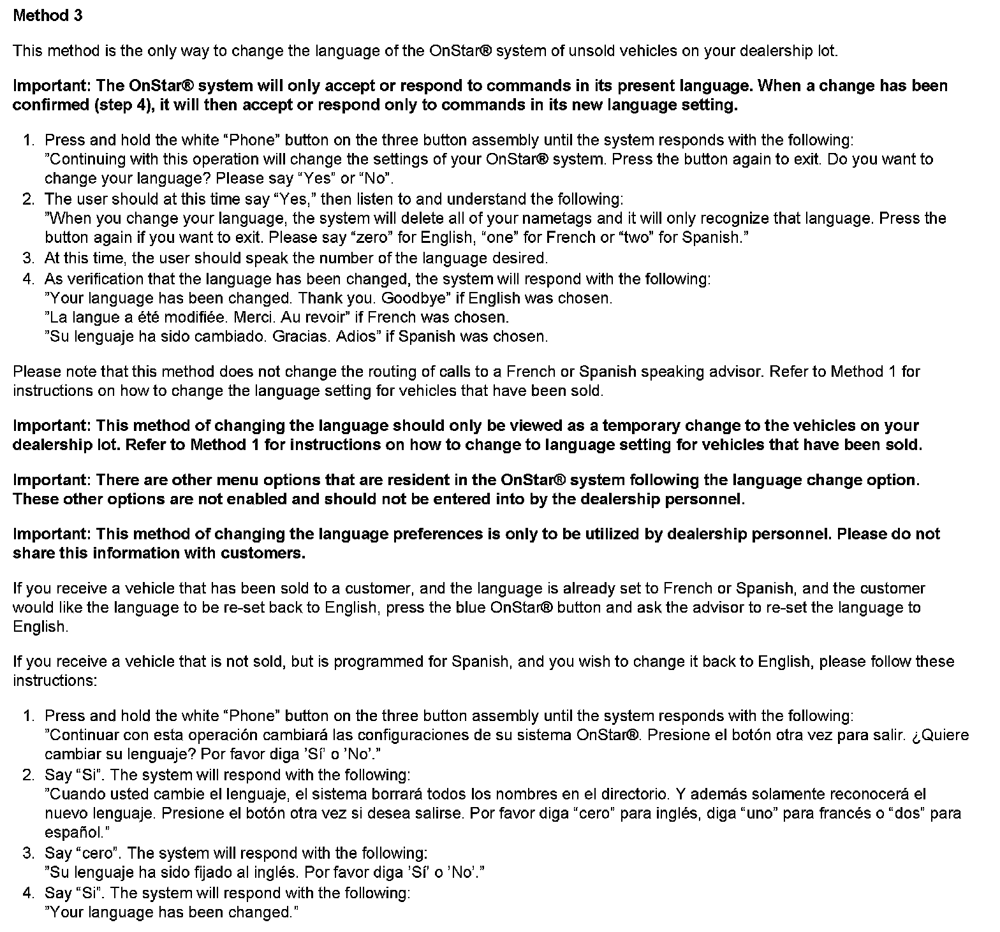
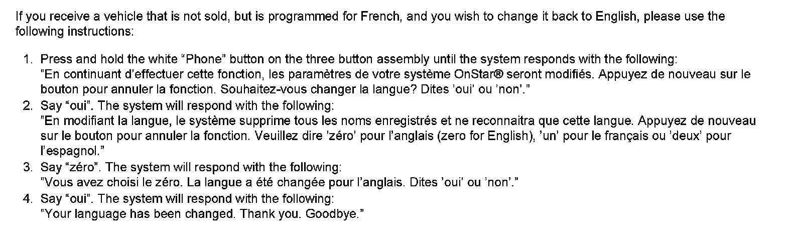

OnStar(R) - Language Change Information (U.S. and Canada Only)
INFORMATIONBulletin No.: 05-08-46-009C
Date: March 19, 2012
Subject: (R)Language Change for OnStar System (U.S. and Canada Only)
Models:
2006-2013 GM Passenger Cars and Light Duty Trucks
Equipped with OnStar(R) (RPO UE1)
Built After and Including VIN Breakpoints Listed Below (2006 MY Only)
Attention:
This bulletin only applies to vehicles equipped with OnStar(R) Generation 6.1 or later with a Station Identification (STID) Number in the following range: 16,000,000-17,000,000 or 20,000,000-21,999,999 or 23,500,001-26,000,000
Supercede:
This bulletin is being revised to add 2009-2013 model years. Please discard Corporate Bulletin Number 05-08-46-009B (Section 08 - Body and Accessories).
Built After and Including the Following VIN Breakpoints:


The Generation (Gen) 6.1 OnStar(R) system found in these vehicles has the capability to change the default English voice recognition to French or Spanish.
Changing the language of the OnStar(R) system will change the following features to the language you select:
- Voice recognition command prompts will be played in the language selected.
- The voice recognition system will only recognize commands given in the selected language.
Once completed, this process completely changes all voice recognition and voice commands of the OnStar(R) system. The process will need to be repeated in its entirety to change to a different language, including English.
The Gen 6.1 version of OnStar(R) does not require the use of the Service Programming System (SPS) to change the voice recognition system. However, there are three ways to change the language.


Method 1

Method 2


Method 3

Disclaimer